29/12/2018 — ST chênh lên này bình thường hay bất thường?
Bản dịch tiếng Việt của bài "Is this ST elevation normal or abnormal?" – Dr. Smith’s ECG Blog. Giữ nguyên toàn bộ 18 hình ảnh của bản gốc.
Tác giả: Pendell Meyers
Một bệnh nhân nam 50 mấy tuổi có tiền sử tăng huyết áp (HTN), đái tháo đường (DM), rối loạn lipid máu (HLD) đến viện vì đau ngực kéo dài chưa tới một giờ.
Đây là điện tâm đồ lúc phân loại (triage) của ông:

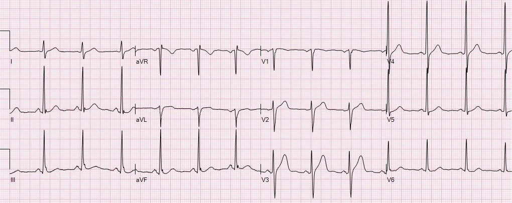
Đây là kết quả đọc bằng máy tính ở đầu trang:

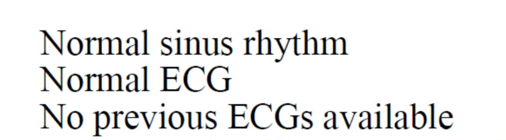
Có nhịp xoang. Điện thế QRS khá cao, tuy nhiên ngoài điều đó ra thì hình thái QRS bình thường, tức là không có hình thái LVH (dù điện thế cao) hay bất thường QRS nào khác có thể làm thay đổi kỳ vọng của bạn đối với các dấu hiệu tái cực. Có một chút ST chênh lên (STE) ở V2 và V3, kèm ST chênh xuống (STD) mức rất nhỏ ở V4-V6. Sóng T không chắc chắn là tối cấp. Không có điện tâm đồ cũ để so sánh. Các chuyển đạo bên và chuyển đạo thành dưới không giúp khẳng định cũng không giúp bác bỏ nghi ngờ tắc LAD. Công thức phân biệt tắc LAD kín đáo với tái cực sớm bị chống chỉ định vì có ST chênh xuống rất nhẹ.
Điện tâm đồ này được nhắn tin cho Dr. Smith mà không kèm bối cảnh lâm sàng nào. Ông trả lời: “Rất thú vị! ST chênh xuống ở V4 và V5 khiến điều này rất khó là một biến thể bình thường.” Ý ông là nghi ngờ tắc LAD dựa trên STE ở V2-3 kèm STD ở V5-6.
Điện tâm đồ được diễn giải là không có thiếu máu cục bộ. Bệnh nhân được theo dõi sát.
Đây là điện tâm đồ ghi lại 45 phút sau, khi bệnh nhân vẫn còn đau ngực:

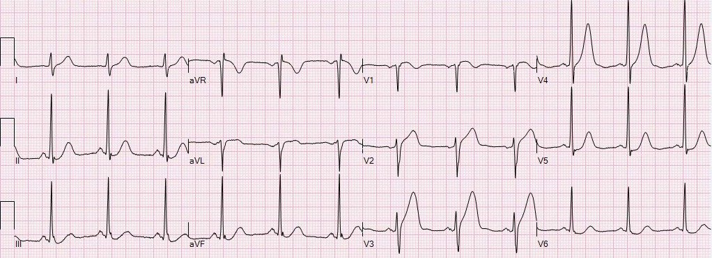
Thêm nhiều điện tâm đồ ghi lại trong lúc chờ phòng thông tim (cath lab) sẵn sàng:

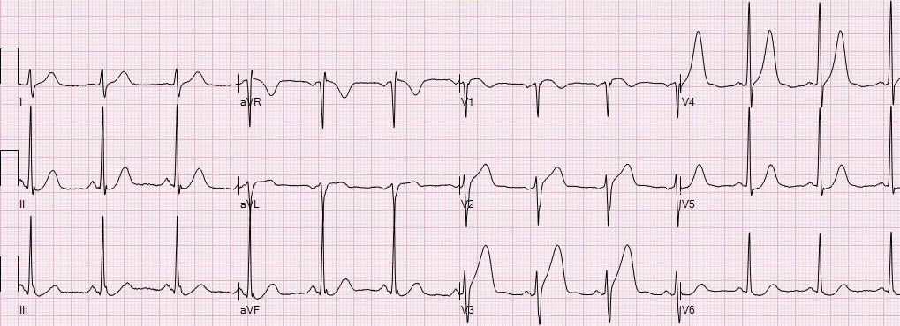

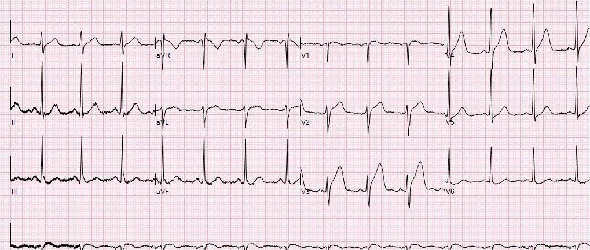

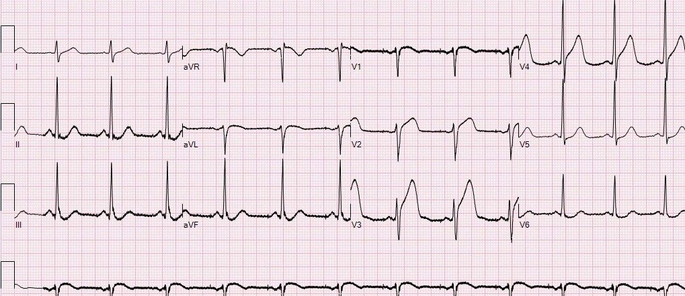

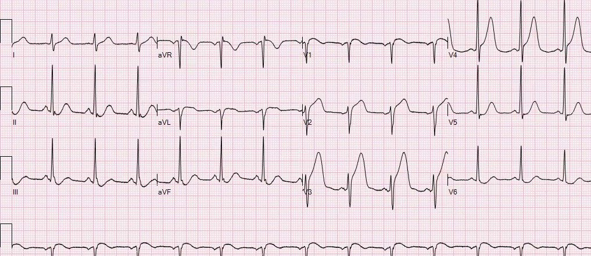
Khi thông tim, họ thấy một tổn thương cấp, có huyết khối ở LAD đoạn gần với mức hẹp 95% và dòng chảy TIMI 2, kèm tắc hoàn toàn do huyết khối tại lỗ xuất phát của nhánh chéo thứ 1 (dòng chảy TIMI 0). Đây là hình ảnh trước và sau can thiệp:

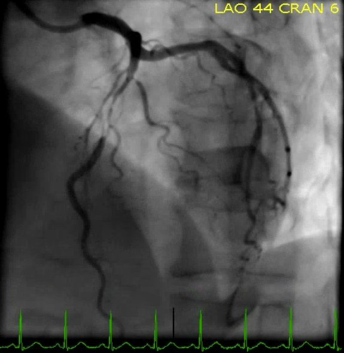

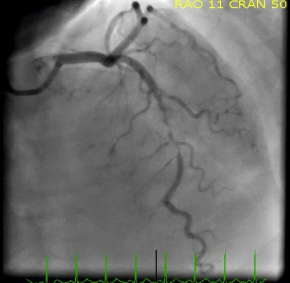

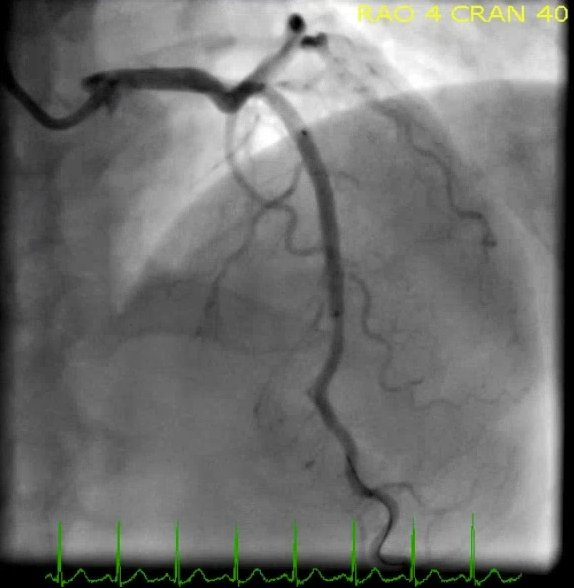

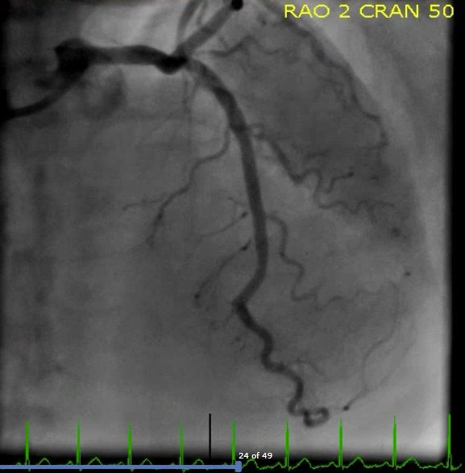
Đây là các điện tâm đồ ghi sau can thiệp, cho thấy các dấu hiệu tái tưới máu như dự kiến:

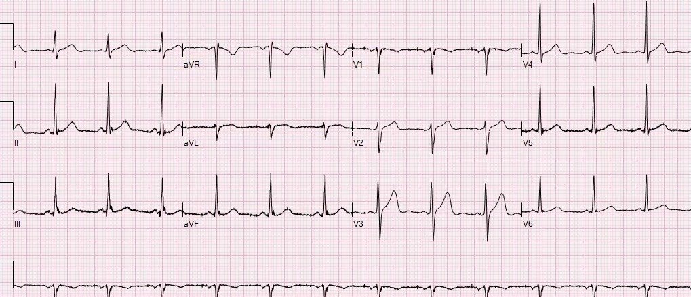

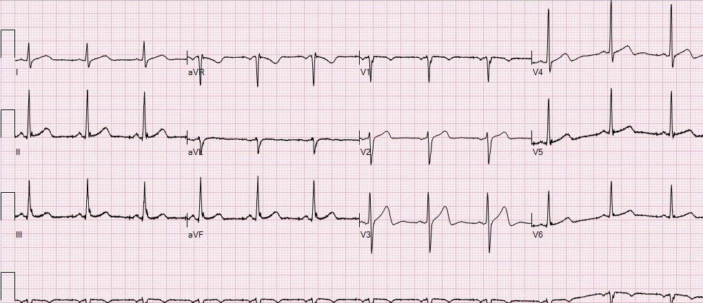

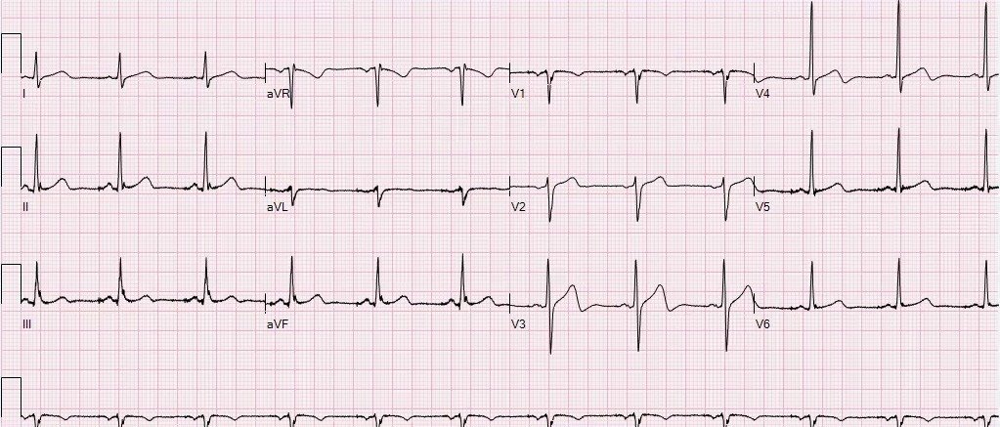

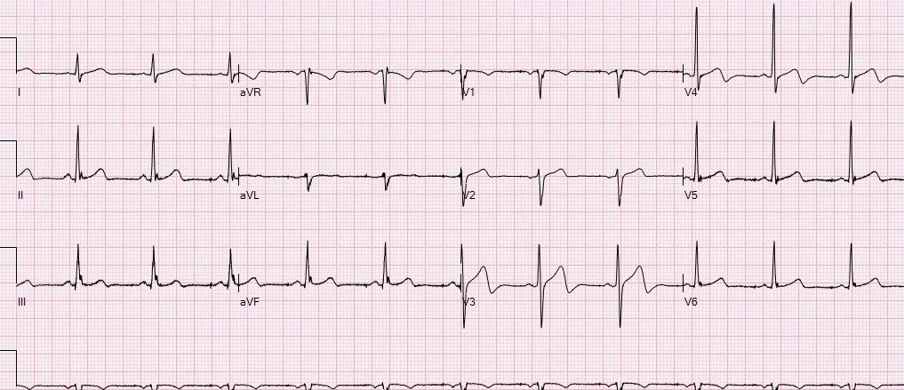
Troponin T đạt đỉnh chỉ 0,91 ng/mL. Điều này có lẽ là do bệnh nhân đến viện sớm và các điện tâm đồ ghi lại nhanh chóng, phù hợp, cùng với can thiệp kịp thời. Phần lớn các trường hợp tắc LAD kéo dài mà không được can thiệp nhanh sẽ làm troponin tăng cao hơn mức này.
Bệnh nhân hồi phục tốt.
Những điểm cần học:
Theo kinh nghiệm của chúng tôi (theo những gì chúng tôi biết, chưa có y văn ủng hộ hay phản bác), sự kết hợp giữa STE bất thường ở các chuyển đạo trước tim phải/chuyển đạo trước với STD ở các chuyển đạo bên dường như là dấu hiệu chỉ điểm tắc LAD rất sớm hoặc sắp xảy ra. Bạn sẽ gặp nhiều bệnh nhân đau ngực có ST chênh lên ở các chuyển đạo trước, tuy nhiên bạn không thể mặc định đó là ST chênh lên biến thể bình thường khi có STD ở các chuyển đạo bên, vì điều này về cơ bản không bao giờ bình thường khi QRS bình thường.
Các điện tâm đồ ghi lại giúp những quyết định khó trở nên dễ dàng hơn.

———————————————————–
Bình luận của KEN GRAUER, MD (29/12/2018):
———————————————————–
Một ca tuyệt vời của Dr. Pendell Meyers, làm nổi bật việc nhận ra các dấu hiệu cấp tính kín đáo. Mặc dù tôi đi đến cùng kết luận với Dr. Smith và Dr. Meyers trong ca này — con đường đi đến đó của tôi hơi khác một chút … Tôi minh họa lý lẽ cho cách tiếp cận của mình ở Hình 1.

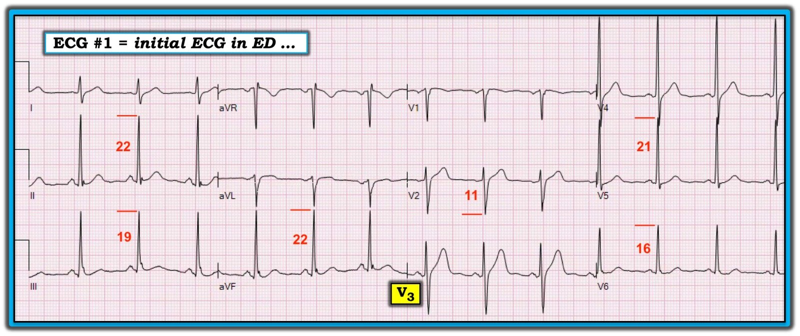
==========================
“Phép màu” của điện tâm đồ học (và sức cuốn hút của nó) — nằm ở những góc nhìn khác nhau mà các chuyên gia đọc điện tâm đồ giàu kinh nghiệm đôi khi đưa ra khi đánh giá cùng một bản ghi. Nhịp ở Hình 1 là nhịp xoang. Các khoảng bình thường (PR, QRS, QT). Trục mặt phẳng trán bình thường, dù tương đối đứng, khoảng ~ +80 độ. Suy nghĩ của tôi về phần còn lại của điện tâm đồ này như sau:
- Dấu hiệu MẤU CHỐT trên bản ghi này nằm ở sóng ST-T tại chuyển đạo V3. Như Dr. Meyers đã nêu — có ST chênh lên nhẹ ở chuyển đạo này. Tôi cho rằng sóng T ở chuyển đạo V3 cao không tương xứng so với sóng R ở chuyển đạo này, và đáy của sóng T này rộng-hơn-mức-cần-có. Với tôi, sóng T này trông thật “lạc lõng” khi xét các dấu hiệu ST-T trên phần còn lại của bản ghi. Vì vậy — sóng ST-T ở chuyển đạo V3 có thể biểu hiện một dấu hiệu sớm của tắc LAD cấp …
- Tôi không bị ấn tượng bởi sóng ST-T ở chuyển đạo V2. Tôi cho rằng mức độ và hình dạng của sóng ST-T ở chuyển đạo V2 tương đương với những gì có thể thấy trên một bản ghi bình thường.
- Có điện thế đạt tiêu chuẩn LVH một cách chắc chắn. Sóng R ≥20 mm ở bất kỳ chuyển đạo thành dưới nào (II, III hoặc aVF) là đủ tiêu chuẩn điện thế. Cùng với điện thế nói chung khá lớn, và tiêu chuẩn điện thế LVH chắc chắn được thỏa mãn ở 2 chuyển đạo thành dưới — tôi diễn giải hình ảnh ST dẹt kèm ST chênh xuống nhẹ ở chuyển đạo V6 + điểm J chênh xuống nhẹ ở chuyển đạo V5 là một “tương đương tăng gánh” (strain equivalent). Xét đến bối cảnh lâm sàng (nam giới 50 tuổi bị đái tháo đường và tăng huyết áp) — tôi cho rằng những dấu hiệu này là quá đủ để xác định có LVH trên điện tâm đồ.
==========================
Nhận định Ban đầu của tôi về Điện tâm đồ #1: Tôi hoàn toàn không chắc chắn từ bản ghi ban đầu này liệu các dấu hiệu trên điện tâm đồ #1 có biểu hiện một biến cố cấp hay không. Khi không có bản ghi cũ để so sánh — tôi cảm thấy không có cách nào để phân biệt các dấu hiệu kín đáo ở chuyển đạo ngực bên là một dấu hiệu lâu dài của LVH (như một “tương đương tăng gánh”) — hay là thiếu máu cục bộ mới có thể có. Điều này khiến tôi chỉ còn chuyển đạo V3 là chuyển đạo duy nhất thực sự đáng lo ngại — và, một chuyển đạo đơn lẻ là không đủ để đưa ra chẩn đoán chắc chắn … ĐIỀU CỐT LÕI: Tuổi và tiền sử lâm sàng của bệnh nhân này (đái tháo đường; đau ngực mới–khởi phát đến khoa cấp cứu (ED)) — tự động xếp ông vào nhóm có tỷ lệ hiện mắc cao đối với một biến cố cấp. Rõ ràng, cần thêm thông tin trước khi có thể đưa ra quyết định chắc chắn — nhưng “trách nhiệm chứng minh” thuộc về người thầy thuốc trong việc loại trừ tắc LAD cấp.
- Điện tâm đồ thứ 2 ghi 45 phút sau đã xóa tan mọi nghi ngờ!
==========================
Bình luận về chẩn đoán LVH trên Điện tâm đồ:
Như tôi đã bàn chi tiết trong bài viết trên blog của Dr. Smith ngày 27 tháng Mười Hai năm 2018 — hơn 50 tiêu chuẩn đã được đề xuất trong y văn để chẩn đoán LVH trên điện tâm đồ. Bất cứ khi nào có quá nhiều câu trả lời tiềm năng cho bất kỳ câu hỏi lâm sàng nào — điều đó có nghĩa là không “câu trả lời” nào trong số đó tốt được như chúng ta mong muốn.
- Ngay cả trong tay người giỏi nhất — độ nhạy của điện tâm đồ trong đánh giá LVH cũng không quá 60%. “Tin tốt” là dù độ nhạy kém như vậy — khi một số tiêu chuẩn nhất định được thỏa mãn, độ đặc hiệu đối với LVH có thể rất cao (tức là >90-95%).
- Độ đặc hiệu của điện tâm đồ đối với LVH tăng lên đáng kể nếu, ngoài việc đạt một hoặc nhiều tiêu chuẩn điện thế: i) bệnh nhân ở một độ tuổi nhất định (tức là bệnh nhân dưới ~35 tuổi thường biểu hiện biên độ QRS lớn hơn mà không phản ánh lớn buồng tim thật sự); ii) bệnh nhân có (các) tình trạng dễ dẫn đến LVH (như tăng huyết áp, như trong ca này); và, iii) có thay đổi ST-T phù hợp với tăng gánh thất trái (LV “strain”) ở một hoặc nhiều chuyển đạo bên. LƯU Ý: Ngay cả khi không có hình ảnh ST-T chênh xuống dốc xuống từ từ (võng xuống) kinh điển của tăng gánh thất trái — một hình ảnh bất thường ST-T kín đáo hơn ở chuyển đạo bên (tức là ST dẹt và/hoặc chênh xuống nhẹ như thấy trong ca này) vẫn được coi là một “tương đương tăng gánh”, và giúp tăng độ đặc hiệu đối với LVH khi tiêu chuẩn điện thế được thỏa mãn cùng với một tình trạng thuận lợi.
- Sự hiện diện của LVH trên điện tâm đồ thường khiến việc đánh giá bệnh mạch vành cấp khó khăn hơn nhiều. Dù vậy, với tiền sử đau ngực mới khởi phát và hình dạng bất thường của sóng ST-T ở chuyển đạo V3 trên điện tâm đồ ban đầu — người ta phải lo ngại về khả năng tắc LAD cấp cho đến khi chứng minh được điều ngược lại.
- BẤM VÀO ĐÂY — để xem thêm về Cách tiếp cận của tôi đối với việc đánh giá LVH trên điện tâm đồ (bao gồm các tiêu chuẩn điện thế mà tôi ưa dùng).